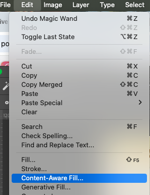

Photoshop Exercise — Content-Aware Fill & Artist Reflection

Example outcome demonstrating use of Content‑Aware Fill and contextual artist research text.
Purpose: Combine Photoshop practical skills with artist research and reflection. Use Content‑Aware Fill to create experimental imagery from your project work, then use the Type Tool (T) for contextual annotations and references on your A3 portfolio pages.
Recommended format: A3 landscape (420 × 297 mm) | 300 dpi | CMYK
Step 1 — Prepare Your Document
- File → New → Print → A3 Landscape.
- Resolution = 300 dpi, Colour Mode = CMYK.

Step 2 — Import and Arrange Work
- Drag in images of your design work (scan, photograph, etc.).
- Use Move Tool (V) + Cmd/Ctrl + T to position and scale.
- Add a white background layer via Edit → Fill → White.

Step 3 — Apply Content‑Aware Fill
- Select a small area using Rectangular Marquee (M).
- Copy and Paste (Cmd/Ctrl +C, +V) to duplicate.
- Use Magic Wand Tool (W) around the shape.
- Edit → Content‑Aware Fill… → adjust preview, then OK.


Step 4 — Refine and Blend
- Merge selected layers → Merge Layers.
- Experiment with Blending Modes and Opacity.
- Seek subtle, cohesive integration between layers.

Step 5 — Add Artist Research & Text
- Select Type Tool (T) to create text labels and annotations.
- Add:
- Artist names + short context lines.
- Links between their practice and your own.
- Brief reflective statements.
- Choose small, light fonts – avoid distraction from imagery.


Step 6 — Finalise Your A3 Page
- Check flow and balance across your A3 layout.
- Save as .PSD (editable) and .JPG (for sharing or print).
- Add short reflection notes about insights gained.
Artist Research & Reflection — Independent Task
Identify artists or designers exploring erasure, surface change, digital editing, or image transformation. Possible examples:
- Gerhard Richter – blurred abstraction between painting and photography.
- Lorna Simpson – collage of text + image to probe identity and memory.
- Andreas Gursky – digitally composed monumental photographs.
- Ruth van Beek – cut‑out arrangements suggesting accidental gesture.
- Sarah Charlesworth – conceptual compositions around meaning and media.
Reflection prompts — include brief notes on your A3 page:
- Which artist or idea connects to your Photoshop experiment?
- What visual or conceptual link can you identify?
- How did their method influence your editing decisions?
- Include a typed source or credit line (artist + website/book).